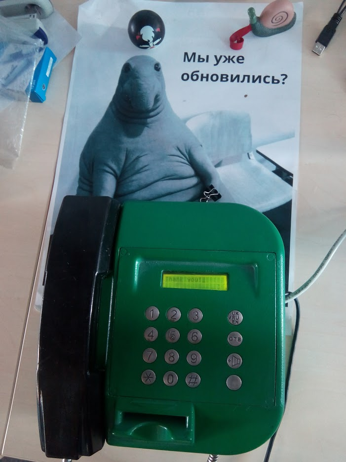

There is a unique tactile satisfaction in mechanical, industrial equipment from past decades. Heavy steel enclosures, satisfying mechanical coin drop chimes, robust rotary or matrix keypads, and substantial handset receivers with coiled cords offer a physical interaction that modern glass smartphones simply cannot replicate.
zk_phone is a hardware retrofitting project: taking an authentic vintage public coin payphone and equipping it with a Raspberry Pi, custom interface logic, character LCD display, and Python runtime.
- Source Code: github.com/rrader/zk_phone
- Hardware: Vintage Coin Payphone, Raspberry Pi, Matrix Keypad, HD44780 LCD, Hook Switch

1. Hardware Architecture & Reverse Engineering
The original payphone was an electromechanical unit built to withstand vandalism and continuous public abuse. To make it smart, several core subsystems were reverse-engineered and interfaced with the Raspberry Pi GPIO:
-
The Hook Switch (Handset Cradle):
- Detects whether the heavy handset is resting on the cradle or has been lifted off-hook.
- Connected as a digital input with internal pull-up resistors and debouncing.
- Acts as the primary state machine trigger: lifting the handset powers on the LCD backlight and initializes the dialing prompt.
-
The Numeric Matrix Keypad:
- The industrial metal keypad uses a multiplexed row-and-column matrix.
- Polled in real time via an event-driven GPIO scanning loop.
- Key presses trigger audio feedback tones and buffer digits in memory.
-
Character LCD Display (HD44780):
- Installed behind the viewing window to provide visual status, dialed numbers, and system diagnostics.
- Configured with custom diagnostic shortcuts: for example, dialing
*1#prints the current local IP addresses of the Raspberry Pi directly onto the screen.
-
Coin Drop Mechanism & Relay:
- The mechanical coin channel validates and signals coin insertions through microswitches.
2. Software Architecture
The software is written in Python, structured around a finite state machine (FSM) implemented in zk_phone/app.py:
┌──────────────────────┐
│ Idle / On Hook │
└──────────┬───────────┘
│ Handset Lifted
▼
┌──────────────────────┐
│ HandsetPut / Active │ ◄──── Dialing Buffer & Keypad Events
└──────────┬───────────┘
│
┌──────────┴───────────┐
▼ ▼
[ Service Codes ] [ Audio / Call Engine ]
(e.g. *1# IP)
State Machine Lifecycle:
HandsetPutState: Initialized when the receiver is picked up. Clears the LCD buffer, displays a welcome prompt, and listens for matrix key presses.- Buffer Management: Digits are appended into an internal keyboard buffer and echoed to the LCD screen in real time.
- Special Codes: Secret dial codes trigger maintenance and system functions (e.g., query network configuration, reboot, test coin solenoids).
3. Reflections on Hardware Hacking
Retrofitting vintage equipment with modern single-board computers is one of the most rewarding branches of hardware making:
- Preserving the weighty, indestructible industrial aesthetic of the 20th century.
- Combining mechanical relays and switches with modern high-level Python code.
- Building a conversation piece that bridges analog tactile nostalgia with digital capabilities.